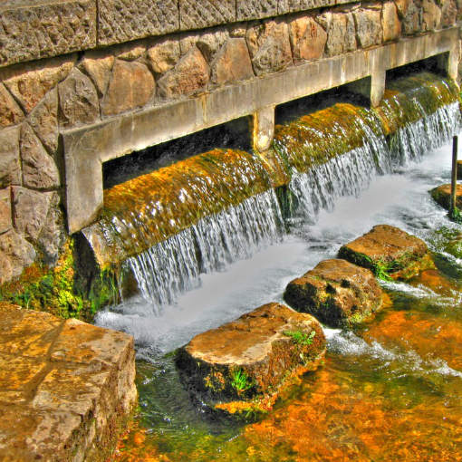
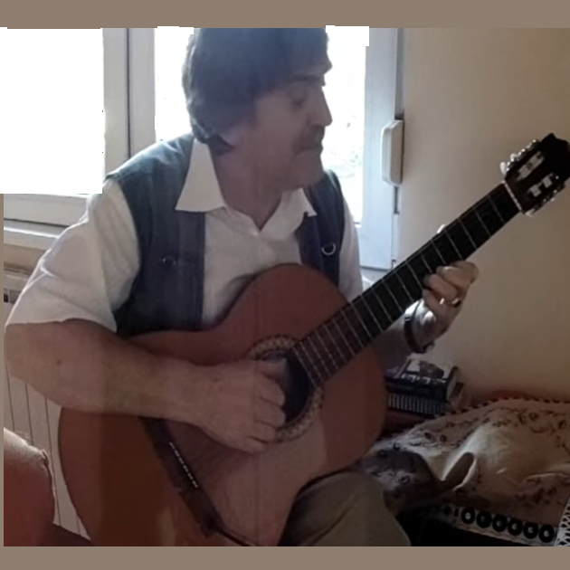
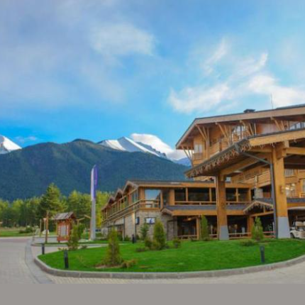

1 ÐилÑана плаÑно белеÑе
Biljana blanchissait du drap
(Deseta Rukovet - 10ème guirlande :00:00 - 02:00)
 Statue de Biljana au parc des sources "StudenÄiÅ¡ta" à Ohrid Oeuvre de Pavle Gjorgjievski-Zufa (1932-2010 Créée en 1986. Instalée aux "Sources" en 2009) |
 "Biljana" Version 10. rukovet (1902) |
 "Biljana" version "Ivkova slava" (1901) |
 "Biljana" - Air traditionnel (début) |
 "Biljana" - Air traditionnel (fin) |
|
|
|
|
 1. Biljana platno beleše Harmonisé par Mokranjac (1902) |
 2a. Biljana (traditionnel) par l'ensemble "Ohridski Trubaduri" |
 2b. Biljana (traditionnel) Par le guitariste Proko Krstevski |
 2c Ohridska legenda: extrait du ballet de Stevan HristiÄ (1885-1958) |
 3. "Lihnida" par Efto Pupinoski (né en 1953) Razlog (Bulgarie) |
 4."Ohridskoto Ezero" (Lac d'Ohrid) Chanté par Panayot Panayotov (né en 1951) |
NOTES
|
[1] ÐкониÑна пеÑма "ÐиÑана плаÑно белеÑе" Ñе за (СевеÑнÑ!) ÐакедониÑÑ Ð¾Ð½Ð¾ ÑÑо Ñе "У Ðвана гоÑподаÑа" за ЦÑнy ÐоÑy: пеÑма коÑÑ Ñви знаÑÑ a коÑа ÑимболизÑÑе земÑÑ, Ñак и ако ниÑе поÑÑала дÑжавна Химна. ÐÐ²Ð°Ñ ÑÑÐ¿ÐµÑ Ð½ÐµÑÑмÑиво дÑгÑÑе ÐокÑаÑÑÑ Ð¸ ÑÐµÐ³Ð¾Ð²Ð¾Ñ "10. Ð ÑковеÑи". Ðез обзиÑа на Ñегове ÑÑавове и кÑаÑÑе намеÑе, Ð¾Ð²Ð°Ñ Ð¼ÑзиÑÐ°Ñ Ñе пÑомовиpао и македонÑки Ñезик на коме Ñе ова пеÑма напиÑана, као и оÑÑале ÑÑи из иÑÑe âÐ ÑковеÑиâ. ÐеÑÑÑим, ÐÑаÑевина СÑбиÑа до 1918. године, заÑим ÐÑаÑевина ÐÑгоÑлавиÑa до апÑила 1941. године, наÑÑоÑале ÑÑ Ð´Ð° иÑкоÑене Ð¾Ð²Ð°Ñ Ñезик ÑÑо Ñy ÑмаÑÑалe âcÑпÑким Ñезиком Ñа гÑамаÑиÑким гÑеÑкамаâ. Ðомама за овом пеÑмом Ñе изненаÑeнa ÑÐµÑ Ñе, ÑÑпÑоÑно ÑвоÑÐ¾Ñ Ð½Ð°Ð²Ð¸Ñи, ÐокÑаÑаÑ, за компоноваÑе ÑапÑодиÑе, ÑпоÑÑебио неколико веÑÑо иÑÐºÐ¾Ð¼Ð±Ð¸Ð½Ð¾Ð²Ð°Ð½Ð¸Ñ Ð¼ÐµÐ»Ð¾Ð´Ð¸Ñа, од коÑÐ¸Ñ Ð½Ð¸Ñедна, ни изблиза ни издалека, не подÑеÑа на попÑлаÑÐ½Ñ Ð¼ÐµÐ»Ð¾Ð´Ð¸ÑÑ. СÑпÑки мÑзиколог ÐÐ»Ð°Ð´Ð¸Ð¼Ð¸Ñ ÐоÑÑÐµÐ²Ð¸Ñ Ð±Ð¸Ð¾ Ñе Ñак ÑбеÑен да ÑÑ Ñо ÐокÑаÑÑеве композиÑиÑе за пÑедÑÑÐ°Ð²Ñ âÐвкова Ñлаваâ (1901) или за 10. âÐ ÑковеÑâ аÑÑенÑиÑно ÑÑаÑе и ÑобиÑаÑÐµÐ½Ñ ÑглаÑÐµÐ½Ñ Ð¼ÐµÐ»Ð¾Ð´Ð¸ÑÑ Ð½Ð¾Ð²Ð¸Ñег наÑÑанка. Ðво Ñе гледиÑÑе ÑÑо Ñе ÑеÑко да ce бÑани. [2] ÐеÑеÑе и белина ÐоÑаo Ñ ÐºÐ¾Ð¼e Ñе ÐиÑана бави Ñе пÑаÑе дÑжина плаÑна Ñ Ð¸Ð·Ð²Ð¾ÑÑÐºÐ¾Ñ Ð²Ð¾Ð´Ð¸, након Ñега Ñледи ÑÐ¸Ñ Ð¾Ð²Ð¾ излагаÑе ÑÑнÑÑ. СкÑлпÑÑÑа Ðавла ÐÑоÑгÑиевÑког-ÐÑÑе (1932-2010) наÑÑала 1986. године за ÑекÑÑÐ¸Ð»Ð½Ñ ÑабÑÐ¸ÐºÑ Ñ Ð¨ÑÐ¸Ð¿Ñ Ð¸ коÑа Ð´Ð°Ð½Ð°Ñ ÐºÑаÑи ÑÐ°Ð²Ð½Ñ Ð±Ð°ÑÑÑ Ð¸Ð·Ð²Ð¾Ñа âСÑÑденÑиÑÑаâ, пÑеименована Ñ âÐиÑаниниâ, показÑÑе да Ñ Ð½ÐµÐºÐ¾Ð¼ ÑÑенÑÑÐºÑ Ð¿ÑоÑеÑа пеÑаÑиÑа пÑеÑавиÑа плаÑно као Ñ Ð°ÑÐ¼Ð¾Ð½Ð¸ÐºÑ Ð½a глави. Ð ÐµÑ "бел" - ÑÑо знаÑи "бело" Ñ Ð¿Ñвом пÑиÑÑÑÐ¿Ñ - поÑавÑÑÑе Ñе наÑмаÑе 5 пÑÑа Ñ Ð´ÑгаÑÐºÐ¾Ñ Ð²ÐµÑзиÑи пеÑме. Ðе знам да ли име "ÐиÑана" ÑÑеба додаÑи на ÑпиÑак. Ðво показÑÑе важноÑÑ Ð±ÐµÐ»Ð¸Ð½Ðµ Ñ Ð¾Ð²Ð¾Ñ Ð¿ÑиÑи. ÐакедонÑки кÑижевник ÐиÑо ÐÑзмеÑки (1966 - 2021) Ñ ÑÐ»Ð°Ð½ÐºÑ Ð¿Ð¾Ð´ наÑловом "ÐиÑана, извоÑиÑe, пеÑмаÑa" доÑÑÑпном на инÑеÑнеÑÑ (https://www.ohridnews.com/bil-ana-izvorite-pesnata/) пиÑе : âÐела боÑа Ñе Ñиноним за безбоÑноÑÑ ( белa ÑакиÑа и бело вино), ÑвеÑлоÑÑ (из бели дан, бела зоÑа), племениÑоÑÑ (виÑез на белом коÑÑ Ñ Ð±ÐµÐ»Ð¾Ð¼ замкÑ); као и бледа кожа код Ñовека (из белe ÑаÑe) â. Ðва Ñлога дÑÑÑÑвеног иденÑиÑикаÑоÑа изÑажена Ñе Ñ ÑеÑÐ¼Ð¸Ð½Ñ âÐелогÑаÑаниâ коÑи Ñе везÑÑе Ñз ÑÐµÑ âвинаÑиâ. âУ вÑеме наÑÑанка пеÑме, Ñо ÑеÑÑ ÑÑедином 19. века или можда ÑаниÑе, македонÑко ÑÑановниÑÑво Ñе живело â маÑе-виÑе â Ñ ÑпаÑÑанÑким ÑÑловима, Ñ Ð¾Ð²Ð¾Ð¼âÑÑно-беломâ ÑвеÑÑ , а "ÐелогÑаÑан" Ñе био "бледо лиÑе", добÑо ÑÑ ÑаÑен Ñовек, ÑÑо je живео Ñ ÐºÑеÑÐµÐ½Ð¾Ñ ÐºÑÑи, па и Ñ Ð±ÐµÐ»Ð¾Ð¼ гÑадÑ. СеÑаÑи ÑÑ, пак, били пÑепланÑли од ÑÑнÑа. Ñамни и без ÑкÑаÑа, Ñ Ð¿ÑаÑÑавим заÑеоÑима". Ðапоменимо, меÑÑÑим, да дÑÑги аÑÑоÑи Ñ ÑимâÐелогÑаÑанимаâ виде ÑеÑеÑенÑÑ Ð½Ð° âÐелгÑадâ, наÑпознаÑиÑи локалиÑÐµÑ ÑиквеÑког виногÑада, ÑÑвенa за наÑбоÑе вино ÐакедониÑе. Ðно ÑÑо Ñе ÑигÑÑно Ñе да ce не ÑиÑе овде главнoг гÑадa СÑбиÑе! ÐиÑана ÑÑажи одÑÑеÑÑ Ð·Ð° оÑÑеÑено плаÑно: згоднoг младиÑa, âÑÐµÑ Ñе âбелогÑаÑанинâ, живоÑни ÑапÑÑник о коме ÑаÑа Ñвака млада девоÑка и заÑо ÑÑо Ñе беÑеÑе плаÑна задаÑак коÑи има за ÑÐ¸Ñ Ð´Ð° ce оÑÑваÑи Ð¾Ð²Ð°Ñ Ñанâ. [3] ÐзвоÑи певаÑа и извоÑи y певаÑy ÐзвоÑи коÑима Ñе ÐокÑаÑÑева веÑзиÑа донелa ÑкоÑо ÑнивеÑÐ·Ð°Ð»Ð½Ñ ÑÐ»Ð°Ð²Ñ Ð½Ð°Ð»Ð°Ð·Ðµ Ñе на ÑÑгоиÑÑоÑном Ð¸Ð·Ð»Ð°Ð·Ñ ÐÑ Ñида, Ñ Ð¿ÑавÑÑ Ð¡Ð²ÐµÑoг ÐаÑма. РоманÑа "ÐиÑана" поÑÑала Ñе амблем гÑада и ÐÑ ÑидÑког ÑезеÑа код ÑÑÐ¶Ð½Ð¸Ñ Ð¡Ð»Ð¾Ð²ÐµÐ½Ð°, Ñглавном СÑба и ÐÑгаÑа коÑи ÑÑ Ð³ÐµÐ¾Ð³ÑаÑÑки, иÑÑоÑиÑÑки и кÑлÑÑÑно наÑближи ÐакедонÑима. Ðли веÑзиÑа коÑа поÑÑавÑа пpиÑy Ñ ÐÑ ÑÐ¸Ð´Ñ Ñамо Ñе Ñедна ваÑиÑанÑа ове попÑлаÑне пеÑме меÑÑ Ð´ÐµÑеÑинама. СакÑпÑени ÑÑ Ñ ÑазлиÑиÑим деловима ÐакедониÑе и ÐÑгаÑÑке (ÐÑ Ñид, ÐиÑоÑ, ТеÑово, ÐалиÑник, ШÑип, ÐеÑовÑко, Разлог, СолÑнÑко, ÐÑамÑко, СеÑез...) измеÑÑ 1860. и 1948. године. ÐÑоÑÑавао Ñе македонÑки иÑÑÑÐ°Ð¶Ð¸Ð²Ð°Ñ Ð¥Ð°ÑалампиÑе ÐÐ¾Ð»ÐµÐ½Ð°ÐºÐ¾Ð²Ð¸Ñ (1909 -1984) 25 ваÑиÑанÑи ове пеÑме за коÑе пÑеÑпоÑÑавÑа да ÑÑ Ð½Ð°ÑÑале око Разлога, ваÑоÑиÑe нa ÐиÑинÑкoj планини Ñ ÐÑгаÑÑкоÑ. Сада Ñе зимÑко ÑпоÑÑÑко одмаÑалиÑÑе, али Ñе веÑина ваÑиÑанÑи ове пеÑме ÑакÑпÑена Ñ Ð²Ñеме када Ñе Ð¾Ð²Ð°Ñ Ð³Ñад био наÑпознаÑиÑи по винÑ. ÐÑÑда и ÑенÑÑална Ñема ÑадÑе, она о Ð·Ð³Ð¾Ð´Ð½Ð¾Ñ Ð´ÐµÐ²Ð¾ÑÑи коÑа Ñе, док бели плаÑно, заÑÑбÑÑÑе Ñ Ð¼Ð»Ð°Ð´Ð¾Ð³ винаÑа. Ðако Ñе певаÑе пÑелазило од земÑе до земÑе, неки деÑаÑи ÑÑ Ñе пÑоменили: - име девоÑке: ÐÑбинка, ÐÑÑÑе, ÐаÑга, ÐаÑа, Ðимкеа, Ðелка, Ðалина, ÐиÑана, Ðимка, Ðагда, ÐилиÑана, Ðлка или Ðлкана, - меÑÑо: анонимна или наведена Ñека (ÐаÑдаÑ, ÐиÑÑÑиÑа, СÑÑÑма...). - бÑÐ¾Ñ ÑÑÐ¸Ñ Ð¾Ð²Ð°, поÑеÑак и кÑÐ°Ñ Ð¿ÑиÑе ÑакоÑе Ñе ÑазликÑÑÑ Ð¾Ð´ веÑзиÑе до веÑзиÑе. [4] ÐÑлÑÑÑна ÑеволÑÑиÑа ÐокÑаÑÐ°Ñ Ñе, оÑвÑнÑвÑи Ñе на Ð¾Ñ ÑидÑÐºÑ Ð²ÐµÑзиÑÑ Ð¿ÐµÑме, Ñве оÑÑале баÑио Ñ Ð·Ð°Ð±Ð¾Ñав. ÐÑÑовÑемено, oн Ñе "ÐиÑанÑ" ÑÑинио Ñедним од наÑпопÑлаÑниÑÐ¸Ñ Ð¸Ð¼ÐµÐ½Ð° на ÐалканÑ, ÑкÑÑÑÑÑÑÑи и ÐÑ Ñид где Ñе ÑаниÑе била гоÑово непознаÑo. ÐÑ ÑидÑки извоÑи ÑÑ Ñе некада звали "СÑÑденÑиÑÑа", ÑÑо знаÑи "Ðелике Ñ Ð»Ð°Ð´Ð½Ðµ воде". Ðколина Ð¾Ð²Ð¸Ñ Ð¸Ð·Ð²Ð¾Ñа била Ñе излеÑиÑÑе познаÑо по ÑвоÑим пÑиÑодним лепоÑама и ÑвоÑoj каÑани до коÑÐ¸Ñ Ñе долази копном Ñа пÑÑа СвеÑи-ÐаÑм или пловном Ñеком СÑÑдениÑом коÑа повезÑÑе извоÑе Ñа ÑезеÑом. ÐокÑаÑÐ°Ñ Ð½Ð¸Ñе Ñамо yÑинио âÐиÑанÑâ амблемаÑиÑком пеÑмом ÐÑ Ñида; yÑинио Ñе и Хладне извоÑе извоÑима о коÑима Ñе говоÑи Ñ ÑÑÐ¸Ñ Ñ âÐа ÐÑ ÑидÑкиÑe извоÑиâ. Ðли пÑе Ñвега, ÐокÑаÑÐ°Ñ Ñе изазвао иÑеÑеÑоваÑе Ð¼Ð½Ð¾Ð³Ð¸Ñ Ð´ÑÑÐ³Ð¸Ñ ÑмеÑника за легендаÑÐ½Ñ ÐиÑанÑ. ÐÐµÐ½Ð¾Ñ Ð¾Ð·Ð»Ð¾Ð³Ð»Ð°ÑеноÑÑи поÑебно Ñе допÑинео Ñедан ÑÑпÑки композиÑоÑ: СÑеван Ð¥ÑиÑÑÐ¸Ñ (1885-1958) коÑи Ñе ÐиÑÐ°Ð½Ñ ÑÑавио Ñ ÑÑедиÑÑе Ñвог балеÑа âÐегенда о ÐÑ ÑидÑâ, коÑи Ñе пÑви пÑÑ Ð´Ð°Ñ Ñ Ñедном ÑинÑ, 5. апÑила 1933. заÑим Ñ 3 Ñина, 29. новембÑа 1947. Ñ ÐаÑодном позоÑиÑÑÑ Ñ ÐеогÑадÑ. ÐÑго вÑемена Радио ÐÑ Ñид â коÑи Ñе емиÑовао непÑекидно од 1957. до 2016. године â поÑео Ñе и завÑÑавао ÑвоÑа емиÑоваÑа модеÑнизованом инÑÑÑÑменÑалном инÑеÑпÑеÑаÑиÑом âÐиÑана плаÑно белеÑеâ коÑа Ñе поÑÑала âзаÑÑиÑни знакâ Радио ÐÑ Ñида. ÐÑеÑкоÑимо безбÑоÑне конзеÑвне, ÑÑÑиÑÑиÑке и поÑопÑивÑедне оÑганизаÑиÑе и Ñобне кÑÑе коÑе ÑÑ Ñе ÑÑавили под пÑизив âСвеÑе ÐиÑанеâ, ÑкÑÑÑÑÑÑÑи, као ÑÑо jе и оÑекивано, ÑкопÑки бÑенд веÑа! Ðа кÑаÑÑ, да поменемо 2 модеÑне пеÑме коÑе Ñе изнедÑила ÑÑаÑа: [5] ÐавÑÑне напомене ÐепÑоÑеÑив Ñланак ÐиÑе ÐÑзмеÑког ÑказÑÑе на поÑÑоÑаÑе ÑапанÑког ÑдÑÑжеÑа âÐиÑанаâ коÑе Ñе поÑвеÑено македонÑÐºÐ¾Ñ Ð¿ÐµÑми и игÑи. Чланак Ñе завÑÑава Ð¼ÐµÐ»Ð°Ð½Ñ Ð¾Ð»Ð¸Ñном ноÑом: Ðбилни извоÑи коÑи ÑÑ Ñ Ñанили ÐÑ ÑидÑко ÑезеÑо кÑоз ÑÐµÐºÑ Ð¡ÑÑдениÑÑ, заÑобÑени ÑÑ Ð·Ð° ÑнабдеваÑе водом Ñ Ð¸Ñада Ð¾Ñ ÑидÑÐºÐ¸Ñ Ð¿Ð¾ÑодиÑа, док Ñе Ñека пÑеÑвоÑена Ñ Ð¿Ð»Ð¾Ð²Ð½Ð¸ канал... УкÑаÑко, âÑамо мали део воде Ñа извоÑа ÑÐ¾Ñ Ñвек може да ÑеÑе Ñ ÑезеÑо, а ово, Ñ Ð·Ð½Ð°Ðº ÑеÑаÑа на Ð»ÐµÐ¿Ñ ÐиÑÐ°Ð½Ñ Ð¸ деÑака âкоÑи Ñе око ÑеÑом покÑио, a погледом Ñе пÑождиÑаоâ. ÐодаÑÑ 2 пÑимедбе овом маÑÑÑоÑÑком излагаÑÑ: |
[1] Un chant emblématique "Biljana platno beleÅ¡e" est à la Macédoine (du Nord!) ce qu' "U Ivana gospodara" est au Monténégro : un chant que tout le monde connaît et qui symbolise le pays, même s'il n'en est pas devenu l'hymne national. Il doit ce succès sans aucun doute à Mokranjac et à sa 10ème Guirlande. Qu'il l'ait voulu ou non, ce musicien a également promu la langue macédonienne dans laquelle ce chant est écrit, comme les trois autres de la même "Rukovet". Or, le Royaume de Serbie jusqu'en 1918, puis celui de Yougoslavie jusqu'en avril 1941 se sont évertués à éradiquer cette langue considérée comme du "serbe dégradé". L'engouement pour ce chant a de quoi surprendre car, contrairement à son habitude, Mokranjac, pour composer sa rhapsodie, a utilisé plusieurs mélodies savamment combinées entre elles et dont aucune ne ressemble, ni de près, ni de loin, à l'entêtante mélodie populaire. Le musicologue serbe Vladimir ÄorÄeviÄ Ã©tait même persuadé que c'était les compositions de Mokranjac pour la pièce de théâtre "Ivkova slava" (1901) ou pour la 10ème "Rukovet" qui étaient authentiquement anciennes et la suave mélodie usuelle qui était une création récente. C'est un point de vue difficilement défendable. [2] Blanchissage et blancheur L'opération à laquelle se livre Biljana est le blanchissage de lés de toile par lavage à l'eau des sources, suivi de leur exposition au soleil. La sculpture de Pavle Gjorgjievski-Zufa (1932-2010) créée en 1986 pour une usine textile de Å tip et qui orne à présent le jardin public des sources "StudenÄiÅ¡ta", rebaptisées "Biljanini", nous montre qu'à un moment donné du processus la lavandière repliait la toile en accordéon sur sa tête. Le radical "bel" - qui signifie "blanc" dans une première approche - revient au moins 5 fois dans la version longue du chant. J'ignore si le nom de l'héroïne ne devrait pas s'ajouter à la liste. C'est dire l'importance de la blancheur dans ce récit. L'homme de lettres macédonien MiÅ¡o Juzmeski (1966 - 2021), dans un article intitulé "Biljana, les Sources, la Chanson" consultable en ligne (https://www.ohridnews.com/bil-ana-izvorite-pesnata/), écrit: "La couleur blanche est synonyme de transparence (celle de l'eau-de-vie et du vin blanc), de lumière (petit jour, aube blanche), de noblesse (le chevalier blanc dans un blanc château). Elle évoque aussi la pâleur de la peau ". Ce rôle d'identifiant social est exprimé dans le terme de "BelograÄani" (Blancs citadins) accolé au mot "vinari" (vignerons). "A l'époque de la création de la chanson, c'est-à -dire au milieu du XIXe siècle ou peut-être avant, la population macédonienne vivait - plus ou moins - dans des conditions spartiates, Dans ce monde "en noir et blanc", un "BelograÄan" était un "visage pâle", bien nourri, vivant dans une maison blanchie à la chaux et dans une ville blanche. Les paysans, eux, avaient la peau bronzée par le soleil. Ils vivaient dans des maisons sombres et sans apprêt et dans des hameau poussiéreux". Notons cependant que d'autres auteurs voient dans "BelograÄani" une référence à "Belgrad", la localité la plus connue du vignoble de TikveÅ¡, réputé produire le meilleur vin de Macédoine. Ce qui est sûr, c'est qu'il ne s'agit pas de la capitale de la Serbie! Biljana réclame en compensation pour sa toile abîmée, un beau jeune homme, "parce que le 'citadin blanc', le 'Bel-gradois', est le compagnon de vie dont rêve chaque jeune fille et que le blanchiment de la toile est une tâche qui vise à la réalisation de ce rêve." [3] Les "sources" du chant Les sources dont la version de Mokranjac a assuré la renommée quasi-universelle se situent à la sortie sud-est d'Ohrid, en direction de Sveti-Naum. La romance de Biljana est devenue l'emblème de la ville et du lac d'Ohrid parmi les Slaves du sud, principalement les Serbes et les Bulgares qui sont géographiquement, historiquement et culturellement les plus proches des Macédoniens. Mais la version qui situe l'action à Ohrid n'est qu'une variante de ce chant populaire parmi des dizaines. On en a collecté dans différentes parties de la Macédoine et de la Bulgarie (Ohrid, Bitola, Tetovo, GaliÄnik, Å tip, Berovsko, Razlog, Solunsko, Dramsko, Serez...) entre 1860 et 1948. Le chercheur macédonien Haralampie PolenakoviÄ (1909-1984) a étudié 25 variantes de ce chant dont il suppose l'origine aux environs de Razlog, une localité du massif du Pirin en Bulgarie. C'est aujourd'hui, une station de sports d'hiver, mais la plupart des variantes de cette chanson y ont été collectées à une époque où ce bourg était surtout connu pour son vin. D'où le thème central de l'intrigue, celui de la jolie fille qui, en blanchissant de la toile, s'amourache d'un jeune vigneron. Tandis que le chant migrait d'une région à l'autre, certains détails changeaient: - le nom de la jeune fille: Ljubinka, Gjurgje, Marga, Mara, Dimkea, Jelka, Kalina, Miljana, Dimka, Magda, Liliana, Elka ou Elkana, - le lieu: une rivière anonyme ou spécifiée (Vardar, Bistrica, Struma...). - le nombre de vers, le début et la fin du récit diffèrent également d'une version à l'autre. [4] Révolution culturelle Mokranjac, en jetant son dévolu sur la version Ohridienne du chant, a précipité dans l'oubli toutes les autres. En même temps, il faisait de Biljana un des prénoms les plus populaires des Balkans, y compris à Ohrid où il était auparavant presque inconnu. Les sources d'Ohrid s'appelaient autrefois "StudenÄiÅ¡ta", un augmentatif signifiant "Grandes eaux froides". Les abords de ces sources étaient un lieu d'excursion célèbre pour sa beauté naturelle et sa guinguette accessible par la voie terrestre depuis la route de Sveti-Naum ou par la rivière navigable Studenica qui relie les sources au lac. Mokranjac ne fit pas seulement de "Biljana", la chansion d'Ohrid; il fit aussi des Sources froides, les sources visées par le vers "Na Ohridskite izvori". Mais surtout, Mokranjac a éveillé l'intérêt de nombreux autres artistes pour la figure légendaire de Biljana. Un compositeur serbe contribua tout particulièrement à accroître sa notoriété: Stevan HristiÄ (1885-1958) qui plaça Biljana au centre de son ballet "La Légende d'Ohrid", donné pour la première fois, en un acte, le 5 avril 1933, puis en 3 actes, le 29 novembre 1947, au Théâtre national de Belgrade. Longtemps Radio Ohrid - qui diffusa sans interruption de 1957 jusqu'en 2016 - commença et termina ses émissions par une interprétation instrumentale modernisée de "Biljana platno beleÅ¡e" qui devint la "marque de fabrique" de Radio Ohrid". Passons sur les innombrables conserves, organismes touristiques et agricoles et grands magazins qui se placèrent sous l'invocation de "Sainte Biljana", y compris, comme on pouvait s'y attendre, une marque de lessive de Skoplje! Signalons pour finir 2 chansosns modernes que l'ancienne engendra: [5] Remarques finales L'inestimable article de MiÅ¡o Juzmeski signale l'existence d'une association "Biljana" japonaise qui se consacre aux chansons et dances macédoniennes. L'article se termine sur une note mélancolique: Les sources abondantes qui alimentaient le lac d'Ohrid par l'intermédiaire de la rivière Studenica, ont été captées pour approvisionner en eau des milliers de familles d'Ohrid, tandis que la rivière était transformée en canal navigable... Bref "seule une partie infime de l'eau des sources peut encore se jeter dans le lac, et cela, en souvenir de la belle Biljana et du garçon "qui se couvrait l'Åil de son fez, tout en la dévorait du regard". J' ajouterai 2 remarques à cet exposé magistral: |
| . |
 Mišo Juzmeski (1966 - 2021) |
10 Rukovet